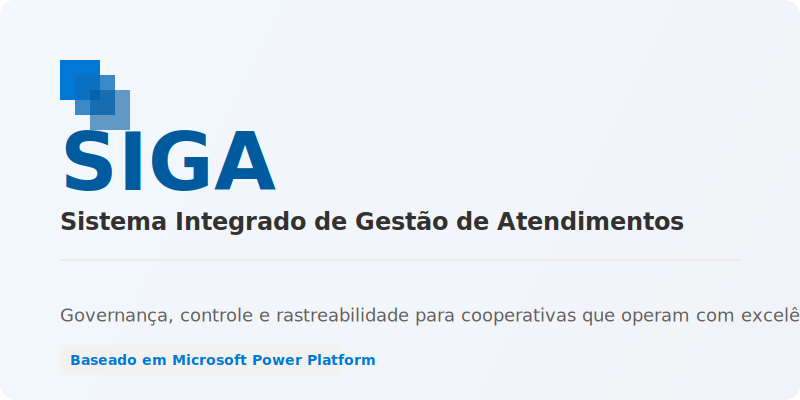

SIGA
Sistema Integrado de Gestão de Atendimentos
Governança, controle e rastreabilidade para cooperativas que operam com excelência.
Por que modernizar?
- Reduz dependência de sistemas legados engessados
- Elimina riscos de arquitetura proprietária fechada
- Permite evolução modular controlada
- Garante segurança baseada no padrão Microsoft
- Centraliza governança operacional
Arquitetura
- Core Estrutural protegido (Dataverse)
- Security Roles nativos
- Separação entre administração e operação
- Modelo meta-driven híbrido e escalável